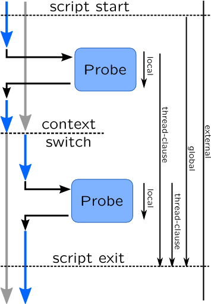
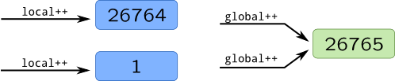

Types and Variables
In this section we will speak about typing in dynamic tracing languages and variable scopes. Details on how complex types are covered in further sections.
Variable types may be split in several categories. First and simpler one, is scalar types which consist of integral types: int, uint32_t, etc, floating point types are not supported. Second large group is pointers. Unlike C, dynamic tracing languages provide explicit string type. SystemTap and DTrace support associative arrays and agreggations for keeping statistics data. Finally, there is a set of complex types such as structures, enumerations, unions and arrays. DTrace supports complex types, their definitions and even aliasing through typedef, in SystemTap they are implicitly used for DWARF variables, but in scripts they explicitly available only in Embedded C.
You can explicitly declare variable types in DTrace, thus long, uintptr_t, string, etc. are valid identifiers in it, but it is optional for non-global variables. In SystemTap, there are only two primitive types: long for keeping any scalar integral type or pointer or string for strings. Types explicitly specified only as return values of functions or function arguments. If types are not specified, than they are deduced from first assignment, but dynamic typing is disallowed: in case of type incompatibility error operands have incompatible types or type mismatch will be printed. DTrace also supports C-style type casting:
printf("The time is %lld\n", (unsigned long long) timestamp);
There are four variable scopes in DTrace: external, global, local and thread-local. SystemTap doesn't support thread-local variables, but in can be emulated via associative arrays.

In this image variable lifetimes are shown as arrows on the right of the drawing.
External variables
External variables are exported by kernel or application, for example tunable module parameters, thus they have longest lifespan that goes beyond running tracing scripts. In DTrace external variables are kept in separate namespace, and accessible with backtick ( ` ) prefix:
# dtrace -qn '
BEGIN {
printf("Maximum pid is %d\n", `pidmax );
exit(0); }'
In earlier versions of SystemTap they can be only read by using Embedded C capabilities:
# stap -g -e '
function get_jiffies:long() %{
THIS->__retvalue = jiffies; %}
probe timer.us(400) {
printf("The time is %d jiffies\n",
get_jiffies()); }'
Recent versions adopted a @var-expression, which accept name of variable and optionally a path to a source file where it is located like in function probes: @var("jiffies").
Global variables
Global variables are created on script start and destroyed when script finishes their execution. They are often initialized by begin probes and sometimes printed in the end probe. In SystemTap global variables are declared with global keyword:
global somevar;
You can also put an initializer to a global variable, thus it is useful to simulate constants and enumerations:
global READ = 1;
Global variables in DTrace may be declared with type keyword, but that is optional:
uint32_t globalvar;
Aggregations in DTrace are implicitly global.
Global variables in probes accessible by their names: globalvar += 1;.
Local variables
Local (or clause-local in terms of DTrace) variables lifespan are the shorter of all which lasts only for single probe, or for a probe-prologue followed by probe in SystemTap. There is no need to define them in SystemTap, they may be used after first assignment:
probe kernel.function("vfs_write") {
pos = $file->f_pos;
}
In DTrace, their types may be optionally defined with this keyword, and later used with this-> prefix:
this uint32_t localvar;
::write:entry {
this->localvar = (uint32_t) arg0;
}
Warningread() system calls:
int global;
this int local;
syscall::read:entry {
this->local++;
global++;
}
syscall::read:return {
printf("local: %d global: %d\n", this->local, global);
}
If you run this script in parallel with single dd process, everything will look fine:
# dtrace -qs clauselocal.d -c "dd if=/dev/zero of=/dev/null" [...] local: 26765 global: 26765 [...]But when you run multiple
dd processes, local and global numbers will eventually differ, because in case of race condition, new space will be allocated:" />
Thread-local variables
Thread local variables are created in a context of a thread, and after thread will be switched, you will access new instance of variable. Their syntax is similar to local DTrace variables, but use self keyword instead of this. They are extremely useful in passing data between distinct probes:
self int readfd; // Optional
syscall::read:entry {
self->readfd = arg0;
}
syscall::read:return {
printf("read %d --> %d\n", self->readfd, arg1);
}
Thread-local variables are not supported by SystemTap but may be easily simulated with associative array which key is a thread ID:
global readfd;
syscall.read {
readfd[tid()] = fd;
}
syscall.read.return {
printf("read %d --> %d\n", readfd[tid()], $return);
}
Other use-case for thread-local variables is when you want to trace only processes that did certain actions, and filter others. In this cases, you will introduce a kind of thread-local do_trace flag, which will be set to 1 if action was done (and probably, reset later), and later check this flag in predicate. If value is not set in associative array in SystemTap or as thread-local variable in DTrace, it defaults to 0, which by default disables probes. This approach is idiomatic, and for example used in Dynamic code analysis for building code graphs.
References